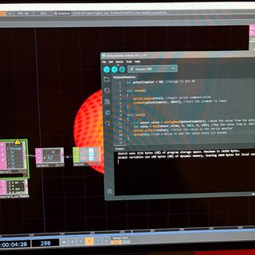
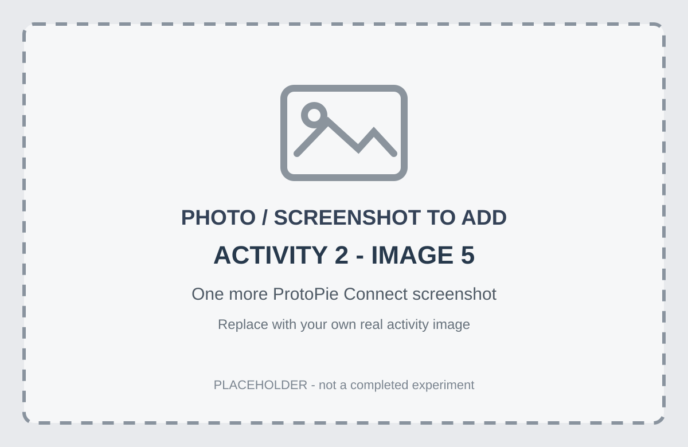
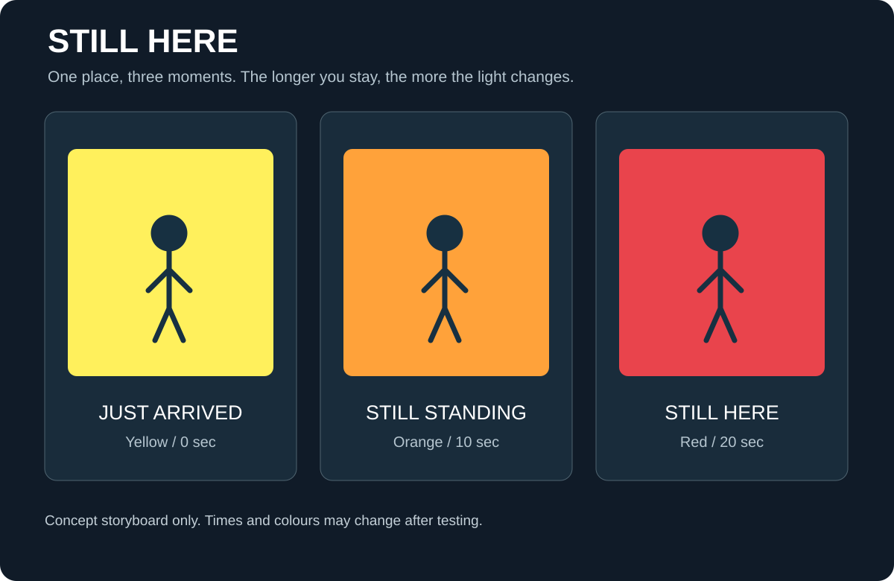
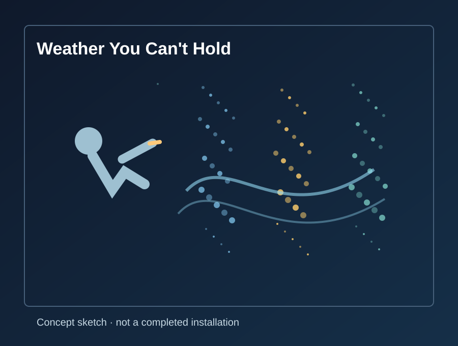
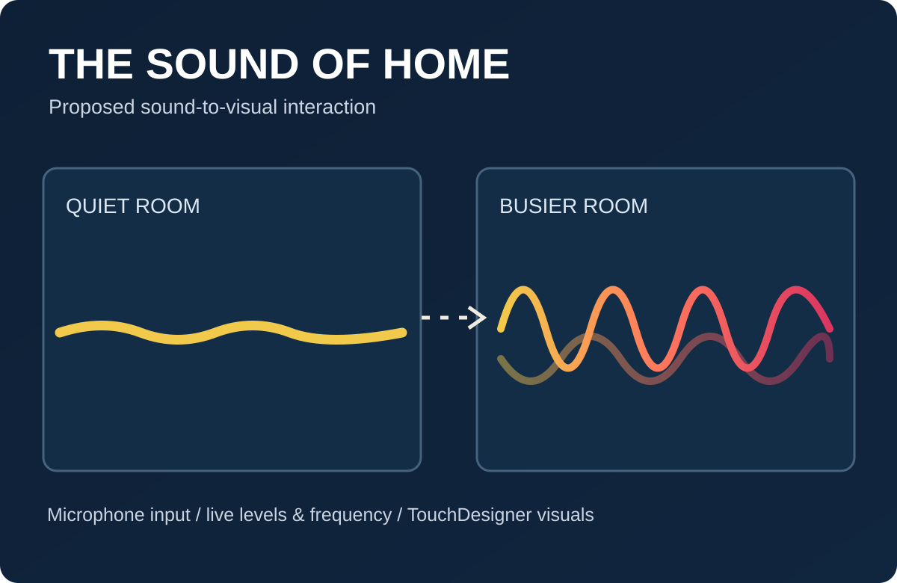
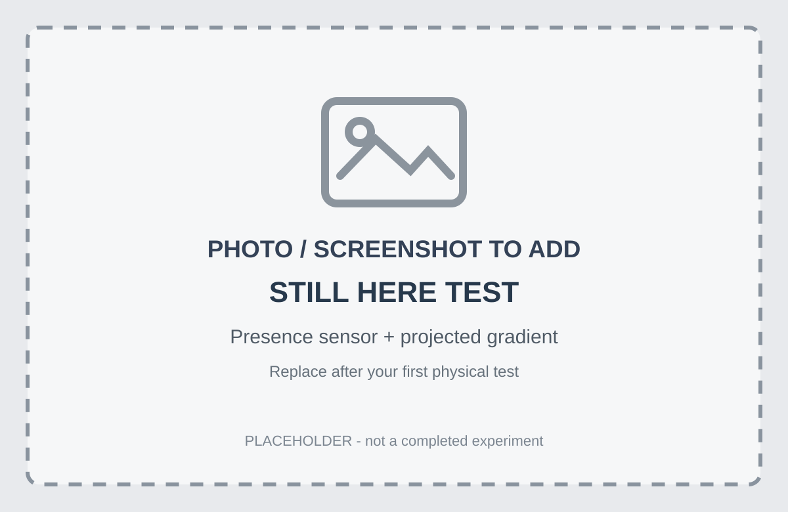
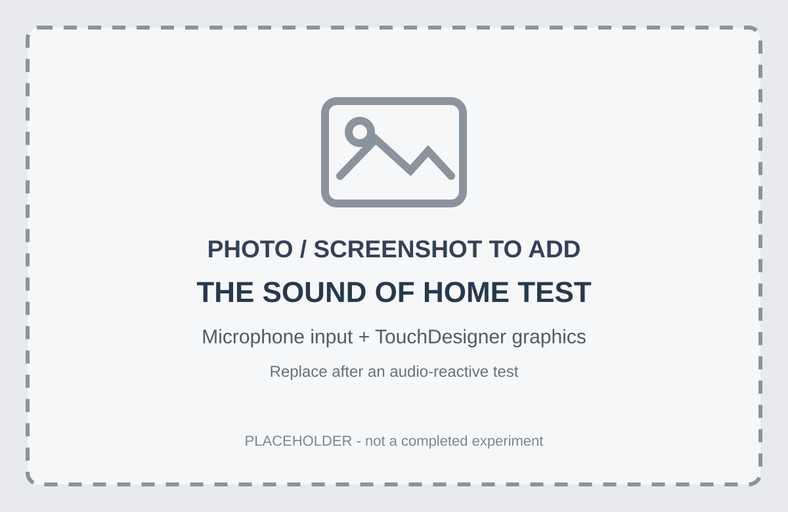

Physical Computing
Module 1 Activity Documentation
Exploring the Art Path | Still Here
Module 1
Activity Research
Module 1 explores physical interaction through Arduino sensor inputs, ProtoPie Connect, and TouchDesigner. These exercises helped me think about how everyday actions can change a projected artwork. Still Here is my current leading idea: the colour shifts slowly while someone stays in one spot. I am also considering The Sound of Home, where live microphone input would change abstract graphics in TouchDesigner. Both projects are proposals rather than completed installations. My next step is to test one dependable physical input and observe how someone understands its response.
Activity 1
I tested the Arduino Uno, Blink sketch, and sensor readings in the Serial Monitor. Turning the potentiometer showed how physical input becomes data.


Activity 2
I used ProtoPie Connect to view incoming degree, humidity, and temperature values and see how sensor data could drive an interaction. The fifth image below is a labelled placeholder for one more genuine screenshot or test photo.




Activity 3
I tested Arduino input with TouchDesigner and explored how sensor readings could affect on-screen visuals. This made me consider interactive projections where presence, stillness, or small gestures change the image.


TouchDesigner wouldn’t work on the lab computer, so I took the Arduino home and continued the test on my own computer. The fourth photo shows that setup.
Research Activity
Consumer Trend Research
I looked at two home-tech directions relevant to 2027: responsive environments and touchless controls. Both give me ideas for physical inputs, although research about smart-home products does not predict how someone will behave in an art installation.
Responsive spaces. The Philips Hue motion sensor can activate lighting when it detects movement. NielsenIQ's 2026 Smart Home Evolution report says 27% of Americans used a smart-home product in the previous 30 days. This is context for responsive technology, not a statistic about interactive art. For my project, I want presence or time spent in one place to become the input.
Touchless input. Google's Nest Hub (2nd gen) uses Motion Sense for certain gestures without needing a camera for that feature. In Worldpanel by Numerator's October 2026 smart-home study, 60% of U.S. smart-speaker buyers named ease of use as a main buying consideration. That does not measure demand for gesture-controlled art. It does make me question whether visitors would know what to do without instructions.
Where The Sound of Home fits. Sound-reactive visuals are another kind of responsive environment: a microphone would supply changes in loudness or frequency, and TouchDesigner would translate those numbers into animation. This is a concept I developed from the wider theme of responsive spaces, not a separate consumer trend proven by the smart-home statistics. My first test would use one microphone, rather than installing sensors throughout a house.
Personas Research
I worked with two research-informed personas: Nia, 26, and Alex, 40. I made these provisional personas to think through the interaction; I have not interviewed people matching them, so their preferences are questions to test rather than facts about an age group.
Nia, 26 (Gen Z). I imagine Nia wanting to try the artwork without reading a long introduction. A Pew Research Center study published in June 2026 found that 33% of U.S. adults aged 18–29 reported having a smart speaker with AI features. I would watch whether Nia notices the slow shift from yellow toward red when she stays in one spot, or leaves before the change becomes clear.
Alex, 40 (Millennial). Alex represents someone who wants the connection between action and response to make sense quickly. Pew reported 41% ownership of a smart speaker with AI features among people aged 30–49. I'd test whether Alex can trigger a touchless response with one gesture, and whether the feedback makes it clear when the system has reacted.
I also looked at purchase priorities, including consumer reviews and ease of use. Those figures relate to buying products, not visiting art installations, so I wouldn't use them to assume how either person behaves in a gallery.
HMI Research
A slowly changing projection could look like a normal video if visitors don't realize that standing still affects it. Gesture-controlled work has a different problem: people may not discover where to move their hands. In both cases, I need to test whether the connection between action and response is noticeable.
For responsive spaces: How might I make standing still produce a visible change that feels worth noticing? How might I show visitors that their time in a particular spot, rather than a prerecorded video, is affecting the projection?
For touchless controls: How might I encourage visitors to discover a gesture through the artwork itself? How might I make a small hand movement produce feedback that's easy to notice but still playful?
For an early test, I'd let someone approach without instructions. I'd watch whether they notice an immediate sign of response, whether they stay long enough to see a colour change, and whether the gesture-based alternative is easier to understand. Those observations would matter more than assuming a home-tech statistic predicts their behaviour.
Project Path
Right now I'm leaning toward the Art Path and working individually, although I seriously considered Design. I like UX/UI design and enjoy thinking about how people understand an interface. I just couldn't come up with a Design Path concept in that moment that felt original enough to get excited about. Making an entire space react to someone seemed more interesting to explore first.
I haven't ruled out UX/UI at all. A touchless museum experience or an interface you navigate by moving around it could be a Design Path project, and those would let me work on discoverability and feedback. But I don't want to force an interface idea just to have one. Even if I choose Art, I can still use UX thinking to make the interaction understandable.
I'd prefer to work individually at first so I can get a sensor connected to TouchDesigner and test a response without taking on too much. A two-person installation might be better with someone else working on it; I'm open to that if the project develops in that direction.
Four art concepts I'm considering
1. Still Here (my current leading idea). One visitor stands in a marked spot. A projection starts yellow and gradually becomes orange, then red as they remain there; when they leave, it returns toward yellow. It would explore how standing still can change an environment. I'd need to test occupancy sensing, timing, and how people interpret the colour. This is a proposal, not a completed prototype.
2. The Sound of Home (new idea). A microphone captures live sound amplitude and, if useful, frequency data; TouchDesigner turns those changing measurements into graphics. In a quiet room, the shapes could move slowly. Noise might make the visuals ripple, stretch, or brighten. My first test would use one microphone and a laptop. I originally pictured microphones in several rooms, but I would start small to check whether the visuals react reliably. A larger installation would need clear consent and visible notice about microphones. The aim would be live analysis of audio levels, not recording speech.
3. Afterimage. Someone approaches a projected surface and small traces gather around them. When they walk away, the traces linger before fading. This focuses on the memory of a person's presence rather than time spent waiting.
4. Weather You Can't Hold. Hand movements shift projected particles like wind. It is the clearest gesture-based idea, though accurately detecting a gesture is something I'd need to test.
Do these have to solve a problem? The Project 1 brief describes Art as creative exploration guided by curiosity and experimentation; the Design Path focuses on the needs of a specified end user. I do not need to invent a practical problem for an Art Path installation. I do need a clear question and a way to test my idea. With Still Here, I want to find out whether a slow response to stillness can hold someone's attention. With The Sound of Home, I want to see whether ordinary sounds change how people notice a space.
How my shortlist changed. I started with ideas such as The Space Between, where two visitors connect lines of light. That could demand a more complicated multi-person setup, so I narrowed the list to four. The Sound of Home is now a stronger alternative because I could try its basic audio-to-graphics interaction using a single microphone.
Research to project connections. Responsive environments connect most directly to Still Here (presence and time), Afterimage (presence and fading traces), and The Sound of Home (sound levels becoming visuals). Touchless control is the stronger connection for Weather You Can't Hold (hand movements). The smart-home figures are background research, not evidence that these artworks will succeed. I would learn that through experiments with visitors.
Why I'm leaning toward Still Here. I like the contrast between how little the visitor does and how much the scene changes. In a campus corridor or quiet gallery corner, it could ask people to stop and notice the passage of time. The hardest part may be getting someone to notice a gradual change before walking away. I'd test a small immediate response, then a slower colour transition. I also need to check whether the yellow-to-red shift feels inviting or more like a warning, and whether another change in brightness or shape would make the work easier to understand without relying on colour alone.
A related artwork I found: Isabelle Pleno's Taking Up Space (2024) also responds to people lingering. That gives me a useful precedent, while my proposed version would explore a simple time-to-colour transition instead of growing forms.
Three concept illustrations: Still Here, Weather You Can't Hold, and The Sound of Home. They explain proposals, not finished installations. Click to enlarge.



Sources: NielsenIQ (2026), Worldpanel by Numerator (Oct. 2026), Pew Research Center (June 2026), Isabelle Pleno (2024), and the Project 1 brief. The research worksheet holds further details.
Download full Research Activity documentProject 1 Concept
Project 1 Concept
Still Here is my current proposal for an interactive projection about time and stillness. When a visitor steps into a particular place, the projection starts yellow. If they stay, it slowly moves through orange toward red; when they leave, the colour gradually resets. I like that they can change the room without needing to wave or tap anything. The idea would suit a campus corridor or small gallery area, where choosing to pause becomes the action. This is a proposed concept, not something I have built yet. I am also considering The Sound of Home, where a microphone drives graphics based on the sound in a room.
Proposed interaction
Input: a floor pressure-switch mat or a carefully positioned continuous distance sensor determines whether someone is still in the marked zone. Data: Arduino sends the occupied / unoccupied state to TouchDesigner. Visual response: a timer progresses while the zone stays occupied and controls the yellow-to-orange-to-red colour transition. Output: a projector displays the changing image; when the spot is empty, the projection fades or resets. I would not rely on a basic PIR motion sensor alone, because it may stop responding when a person is standing still.
Testing plan
First I would test whether the sensor keeps detecting someone who stands still for 20 to 30 seconds, without resetting the timer unexpectedly. Then I would connect the elapsed time to a TouchDesigner colour gradient and try the projected image with another person. If the transition is so slow that they miss it, I would make the first response more noticeable while keeping the later change gradual. I would also ask how the colours feel and try adding a shape or brightness change so meaning does not depend on colour alone.
Alternative concept: The Sound of Home
I also want to test a microphone as an input. My starting experiment would be one microphone connected to a laptop, with TouchDesigner analysing changing audio levels to move a shape or ripple pattern. A quiet room might create slower motion, while speaking or clapping would generate a stronger visual response. This would be live sound analysis rather than storing recordings. I would only consider a multi-room version with permission from everyone using the space.
Photos and prototype tests to add
The following are intentionally blank image placeholders. I have not built either concept yet. I can replace these with genuine setup photos or TouchDesigner screenshots after testing.


Peer feedback and reflection
To complete after the peer discussion. Add what classmates actually said about the concept, which comments helped, and what I decided to change. I have not received or recorded peer feedback here yet, so I am leaving this section open rather than making up quotes.
Reflection
The Module 1 exercises helped me understand how physical actions become sensor data and how that data can change something on screen. I am leaning toward Art because I want to test visual ideas like Still Here rather than build a conventional interface. I did consider the Design Path because I really enjoy UX/UI design, but at the time I could not think of a design project that felt original enough to pursue. I still want to use UX skills here: visitors should notice what the artwork is responding to, and I need to learn from people testing it. I am keeping peer feedback as a separate section above until I can include actual comments and my own response.
Download full Project 1 proposalDownload Module 1 process document (PDF slide deck) - photos from weekly activities, research, concept development, and next steps.
Powered by w3.css